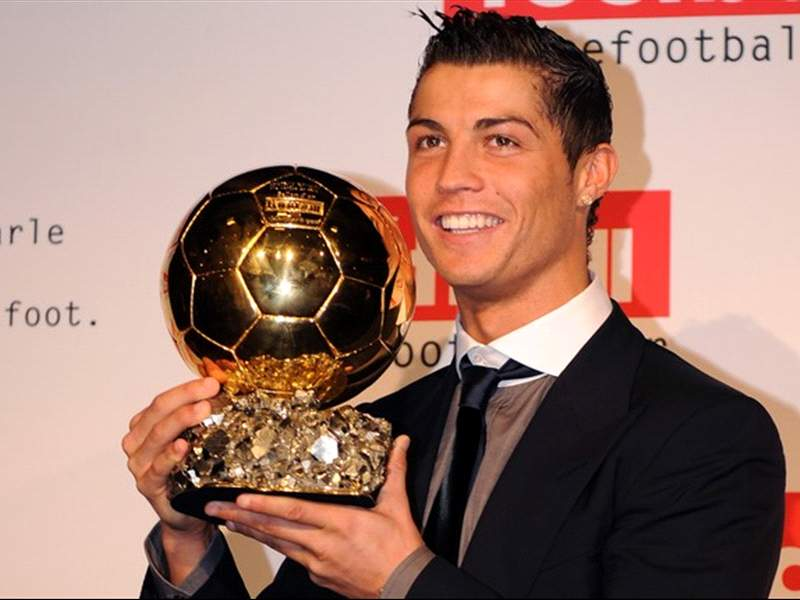
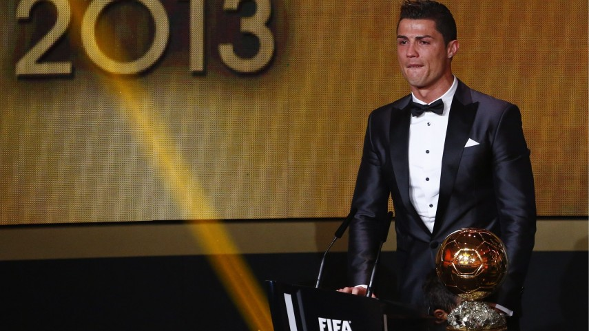
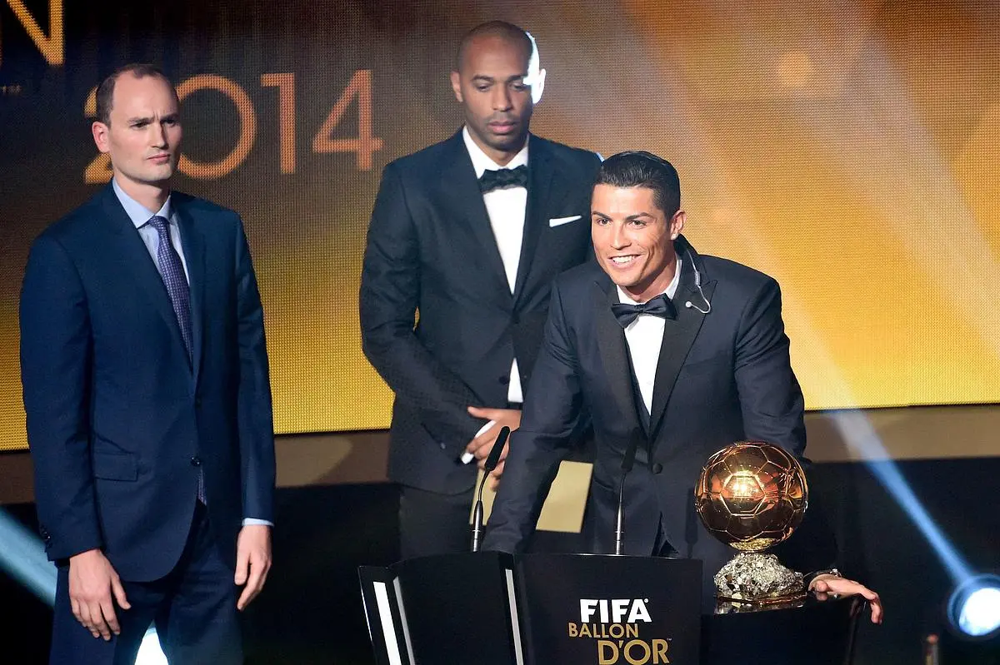
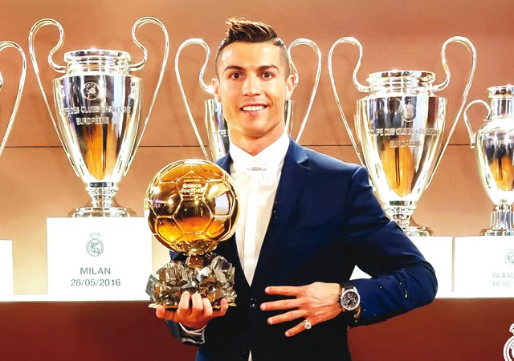
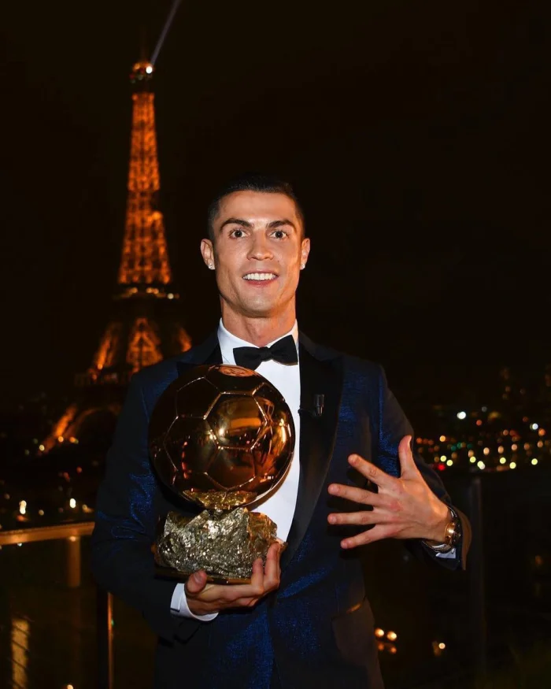

HIS INFO:
| CUT: |
JOB: |
GOALS: |
BALLON D'Or: |
NUMERO: |
| 1.87 |
attaker |
807 |
5 |
7 |
THE FIRST BALLON D'OR:
IN 2008:

THE SECONDE BALLON D'OR:
IN 2013:

THE 3th BALLON D'OR:
IN 2014:

THE 4th BALLON D'OR :
IN 2016:

THE LAST BALLON D'OR:
IN 2017:

THE DON is the only footballer with Lionel Messi to have won the Ballon d'Or at least five times!